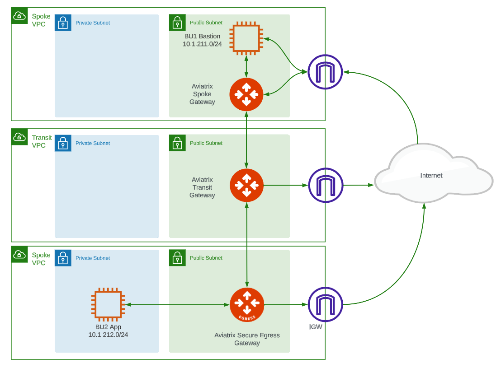

Introduction#
The ACE Automation Specialty Training (Infrastructure as Code - IaC) brings the concepts of DevOps together by automating secure cloud network infrastructure.
No coding experience is required.
There are 3 labs in this training, intended to be performed in sequence. Terraform is used for these labs. Many of Aviatrix’s largest customers do not even leverage the Aviatrix UI to deploy or configure infrastructure. They perform every change in their using Terraform. At no point in this training will you be making any changes on the Aviatrix UI. This training is intended get you on the path of provisioning and automating your cloud network infrastructure with code.
Prerequisites#
ACE Associate certification
An active AWS account
AWS Access Keys with permissions to deploy VPCs, EC2 instances, security groups, and keypairs.
Aviatrix Controller and CoPilot instances deployed in AWS. The training materials expect you have deployed your Controller using the Aviatrix Self-Service tool.
A GitHub account. Sign up here.
A Terraform Cloud Organization account. Sign up here.
Terraform cloud setup#
First-time users of tfc should click Start from scratch.
On the next page, specify a new Organization name within Terraform Cloud and click Create Organization.
Recommended Localizations#
While you could perform the tasks for these labs directly on the GitHub UI, there are certain localizations on your PC that we recommend for working in a larger environment and/or Production. These include:
Terraform: Even though you are executing your plans and applies in
Terraform Cloud, there are several benefits to havingTerraforminstalled locally on your workstation.Git: The open source vcs (version control system) supported by
GitHub.Visual Studio Code: Code editor with embedded
git.
For this training, all these localizations are optional. We will be using the web interface for GitHub and Terraform (i.e. Terraform Cloud).
Focus#
Gain familiarity with tools at your disposal for automating real-world cloud networks. Only a subset of Aviatrix use cases will be covered.
Scenario#
ACE Inc. is a fictitious company with infrastructure in AWS with 3 teams/stakeholders:
Network Operators, aka
NetOpsApplication Developers, aka
DevOpsInfoSec team, aka
SecOps
These labs will ask you to think in terms of these different personas as you perform different lab tasks.
Lab 1#
In Lab 1, you will deploy ACE’s infrastructure from scratch as follows:

The infrastructure is built in the AWS us-west-2 region by default, although you can adjust the code to build it anywhere you want.
As shown in the diagram, inside the region, there are the following resources:
A transit vpc with single
Aviatrix Transit Gateway.A spoke vpc with single
Aviatrix Spoke Gateway, for a workload calledBU1 Bastion, in aNetwork DomaincalledBU1. This host has a public IP as well as a private IP. You can ssh to it as theubuntuuser. Be sure to set a strong password.A spoke vpc with single
Aviatrix Spoke Gateway, for a workload calledBU2 App, in aNetwork DomaincalledBU2. This host has only a private IP. The Spoke Gateway is configured forSingle IP Source NATto allow, monitor, and secure egress traffic to the Internet.
Lab 2#
In Lab 2, you will configure a Connection Policy via Terraform to connect BU1 and BU2. At that point, you will be able to ssh to BU2 App by first connecting to the BU1 Bastion public IP.
You will also resize an Aviatrix gateway via Terraform.
Lab 3#
In Lab 3, you will collaborate with other stakeholders in ACE, Inc (Application Developers and InfoSec teams) to form a CI/CD pipeline for securing Egress traffic in BU2. We will monitor and visualize this in CoPilot as we adjust what FQDNs are allowed to be accessed on the Internet.
A Note about Terraform State#
Terraform maintains its view of the infrastructure in a file called Terraform state.
Note: The Aviatrix Self-service tool is an Aviatrix-developed platform that maintains its own Terraform State for the Controller and Copilot you will deploy. However, one the goals of this training is to deploy cloud infrastructure via Terraform in a separate Terraform state file using tools that are more commonly used, such as Terraform Cloud.
There will be a total of 3 Terraform State files used during this training residing in these locations:
Aviatrix Self-service tool
Terraform Cloud Workspace that is used for Labs 1 and 2
Terraform Cloud Workspace that is used for Lab 3
Important: To avoid excess CSP charges, the lifecycle of these state files should follow a Last-In-First-Out (LIFO) strategy. In other words, after deploying your Controller and CoPilot using the Aviatrix Self-service tool, you will carry out Labs 1, 2, and 3 in that sequence. However, when cleaning up your environment, you must destroy the resources in the reverse order with Lab 3 first, followed by Labs 1 and 2 (they share the same state file) before finally destroying your Controller and CoPilot instance created through Self-Service.
Labs#
Lab 1 - Day 0 (Build)#
VCS-driven workflow
Connect GitHub with Terraform Cloud
Write no code
Deploy infrastructure
Lab 2 - Day 1 (Operate)#
VCS-driven workflow
Modify the Terraform code in Lab 1 to modify existing infrastructure
Lab 3 - Day 2 (Secure)#
API-driven workflow
Create, Automate, and Secure a GitHub Branch
Build a CI/CD pipeline
Apply use-case for Egress security with IaC guardrails by collaborating with different stakeholders (Network Operators (
NetOps), Application Developers (DevOps), Security (SecOps))
When you are ready to begin, click Lab 1 - Day 0 below.